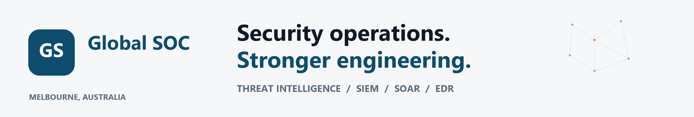
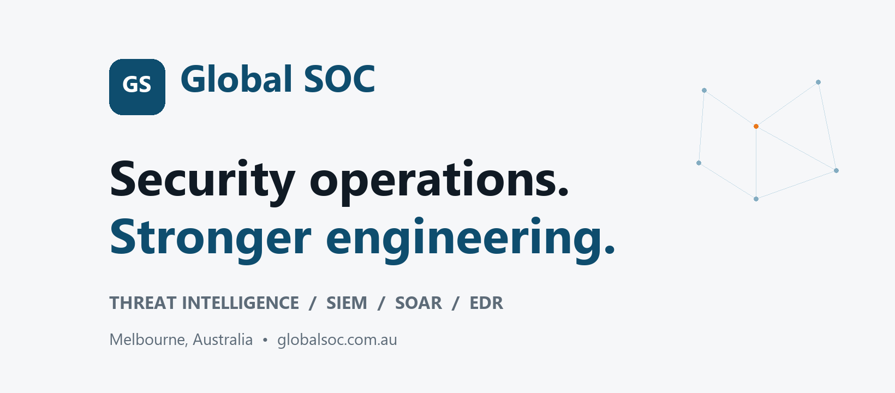
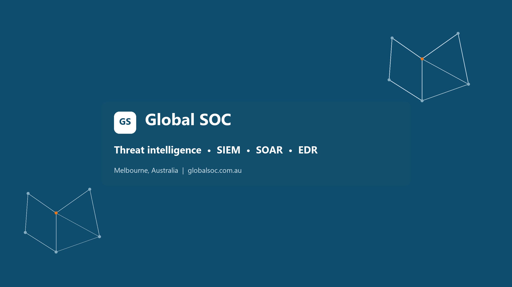
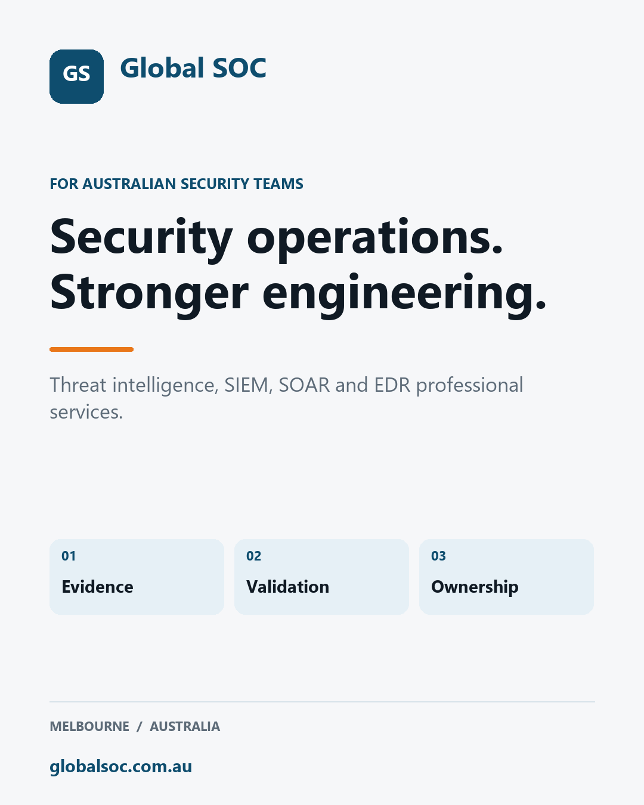
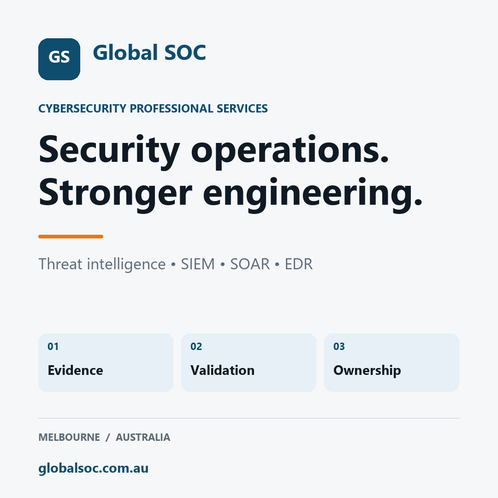
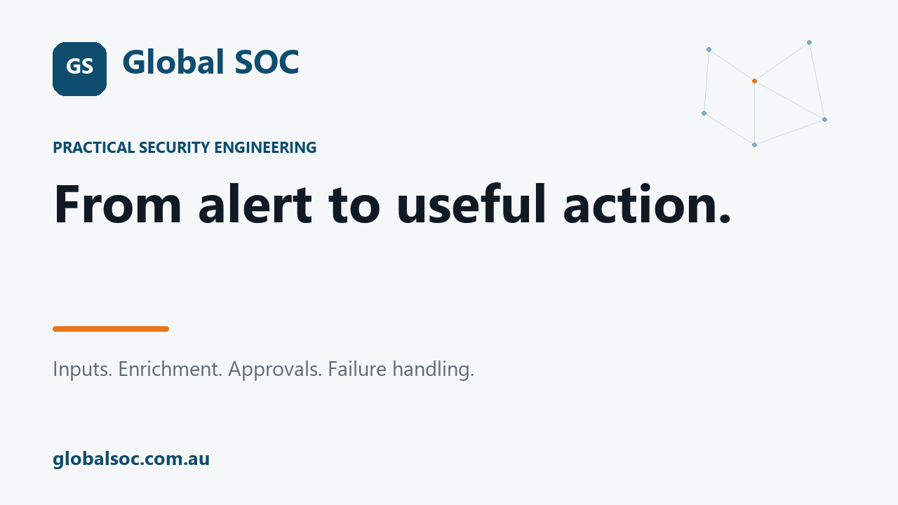

LinkedIn tagline
Threat intelligence, SIEM, SOAR & EDR professional services | Melbourne, Australia82 characters
MELBOURNE / CYBERSECURITY PROFESSIONAL SERVICES
Profile copy and upload-ready graphics for Global SOC. Open this page on your phone to copy text and save the images.
Using Chrome or Safari? Open the setup link in the browser where you are signed in. If the form is unavailable, use the browser menu to request the desktop website. The LinkedIn iPhone app offers another route:
Official LinkedIn Page instructions
Display name: Global SOC. Preferred username: globalsocau (pending availability).
Threat intelligence, SIEM, SOAR & EDR professional services | Melbourne, Australia82 characters
Global SOC is a Melbourne cybersecurity consultancy supporting Australian organisations with internal security teams. We provide professional services across threat intelligence, security information and event management (SIEM), security orchestration, automation and response (SOAR), and endpoint detection and response (EDR). Engage us to discuss implementation, integration, tuning and advisory requirements. We focus on practical engineering work, a clear scope and useful handover to your team. Based in Glen Waverley, Melbourne, supporting organisations across Australia. Discuss your security operations requirements: https://globalsoc.com.au/cybersecurity/#contact676 characters
Melbourne cybersecurity consultancy supporting Australian internal security teams. Threat intelligence, SIEM, SOAR and EDR professional services. Discuss your requirements at globalsoc.com.au.192 characters
Melbourne cybersecurity consulting Threat intelligence • SIEM • SOAR • EDR Supporting internal security teams Discuss your requirements ↓137 characters
Threat intel | SIEM | SOAR | EDR Melbourne cybersecurity consultancy68 characters
Practical security operations from Global SOC, a Melbourne cybersecurity consultancy. We share explanations, lab demonstrations and engineering considerations across threat intelligence, SIEM, SOAR and EDR for Australian organisations with internal security teams. Topics include telemetry quality, detection validation, investigation workflows, automation design and endpoint coverage. Demonstrations use lab or sanitised data and include scope and limitations. For professional services enquiries: https://globalsoc.com.au/cybersecurity/#contact Global SOC Pty Ltd | Glen Waverley, Melbourne, Australia globalsoc.com.au625 characters
Melbourne cybersecurity consultancy. Threat intelligence, SIEM, SOAR and EDR professional services for Australian security teams.129 characters
Tap a graphic to open it. On iPhone, touch and hold the image to save it to Photos, then upload through the platform.

Open / save PNG
Open / save PNG
Open / save PNG
Open / save PNG
Open / save PNG
Open / save PNGDrafts only. Review the final profile links and technical references before publishing.
Introducing Global SOC: cybersecurity professional services for Australian organisations with internal security teams. Our focus is threat intelligence, SIEM, SOAR and EDR. Based in Glen Waverley, Melbourne, we support implementation, integration, tuning and advisory requirements. This page will share practical security engineering: telemetry quality, detection validation, investigation workflows and automation design, with clear explanations of what each approach can and cannot demonstrate. Planning a security operations project? Tell us about your environment and the outcome your team needs. #CyberSecurity #SIEM #SOAR #EDR https://globalsoc.com.au/cybersecurity/#contact
How does a threat advisory become something useful to a security team? Start with six questions: 1. Does the reported behaviour apply to our environment? 2. Which assets or identities could be affected? 3. What telemetry would show the behaviour? 4. Is that telemetry available and usable? 5. How will we test the detection? 6. What should an analyst do when it triggers? MITRE ATT&CK provides a common reference for adversary tactics and techniques. The engineering work is connecting that reference to your own data, tests and response process. Reference: https://attack.mitre.org/ Discuss your threat intelligence and SIEM requirements. #ThreatIntelligence #DetectionEngineering #SIEM https://globalsoc.com.au/cybersecurity/#contact
Planning a SIEM, SOAR or EDR project? A useful starting brief covers: • The operational problem your team wants to solve. • The platforms and data sources involved. • What is in scope and what is outside it. • The tests that will demonstrate completion. • The documentation and handover your team needs. For example, “improve alert quality” needs more definition before it becomes an engineering task. Which alerts? What is the current problem? How will the team assess the change? Global SOC provides threat intelligence, SIEM, SOAR and EDR professional services. Discuss a scoped engagement. #SecurityOperations #CyberSecurityConsulting #Melbourne https://globalsoc.com.au/cybersecurity/#contact
Before relying on a new SIEM data source, ask five questions: 1. Are the expected events arriving? 2. Are timestamps and important fields usable? 3. Can the team identify delays or collection failures? 4. Do the intended detections work against representative test data? 5. Who owns investigation and repair when the source stops reporting? For Microsoft Sentinel, analytics-rule health and audit information can help check rule execution and changes. Use it alongside checks of the underlying data. Microsoft documentation: https://learn.microsoft.com/en-us/azure/sentinel/monitor-analytics-rule-integrity Discuss your SIEM requirements with Global SOC. #SIEM #MicrosoftSentinel #DetectionEngineering https://globalsoc.com.au/cybersecurity/#contact
Before putting a SOAR workflow into production, review what happens when something goes wrong. What if an enrichment service times out? What if a required field is missing? What if the workflow lacks permission? Who receives the failure notification? Which actions need approval? How can the team inspect what happened? Microsoft Sentinel provides automation health monitoring for automation rules and playbooks, including execution logs. Documentation: https://learn.microsoft.com/en-us/azure/sentinel/monitor-automation-health A practical automation brief should include the success path, failure handling, ownership and acceptance tests. Discuss your SOAR integration requirements. #SOAR #SecurityAutomation #SecurityOperations https://globalsoc.com.au/cybersecurity/#contact
An EDR deployment review should ask more than how many endpoints received an installation package. Compare the expected device population with the security platform’s inventory. Then examine onboarding status, sensor health, reporting activity and any exceptions that need investigation. In Microsoft Defender for Endpoint, the device inventory distinguishes onboarding status and sensor health. Those signals help frame the review; the team still needs to reconcile them with its expected assets. Microsoft documentation: https://learn.microsoft.com/defender-endpoint/devices-overview Planning an EDR deployment or configuration review? Discuss your requirements with Global SOC. #EDR #EndpointSecurity #SecurityOperations https://globalsoc.com.au/cybersecurity/#contact
Before adding another threat intelligence feed, define the decision it should support. Are you trying to prioritise an investigation? Review exposure to a reported campaign? Develop a detection? Enrich an existing alert? For each use case, identify the relevant source, the evidence your team needs, the action it could change and the person responsible. Then test the workflow with a small, representative example. That gives the team something concrete to evaluate before expanding the integration. Global SOC provides threat intelligence, SIEM, SOAR and EDR professional services. #ThreatIntelligence #SecurityOperations #CyberSecurity https://globalsoc.com.au/cybersecurity/#contact
Where does your security team need specialist engineering support? • A SIEM data source or detection that needs validation. • An investigation workflow that needs better integration. • A SOAR process that needs clear approval and failure handling. • An EDR rollout that needs coverage and configuration review. • Threat intelligence that needs a defined operational use. Start with the current state, the desired outcome and the evidence needed to accept the work. Global SOC is a Melbourne cybersecurity consultancy supporting Australian organisations with internal security teams. Tell us what your team is working on. #CyberSecurityConsulting #SIEM #SOAR #EDR https://globalsoc.com.au/cybersecurity/#contact